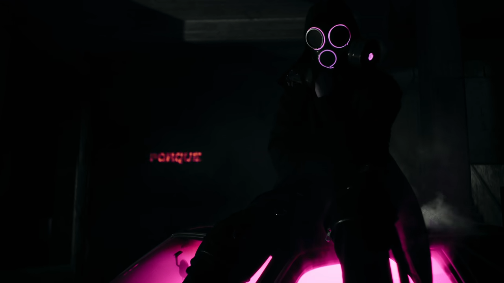

Conocé MAWZ
El rapero y freestyler argentino LIT Killah finalmente ha estrenado su primer álbum, titulado MAWZ haciendo referencia al primer acronimo con el que se identificaba. En este disco vemos colaboraciones muy esperadas con otros artistas de la escena argentina, entre estos FMK, Rusherking, Maria Becerra e incluso Duki y Khea